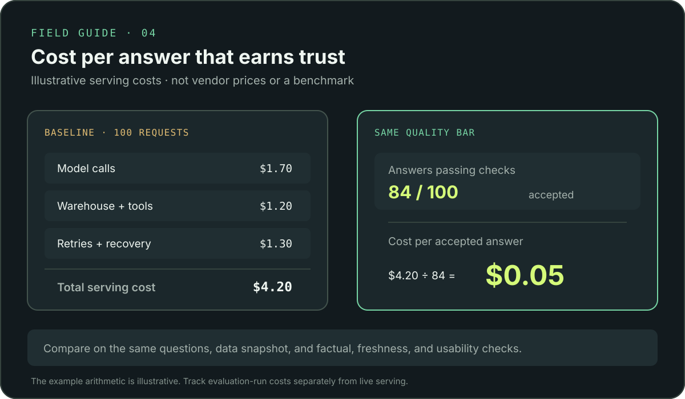

Your analytics agent is probably paying a language model to do arithmetic.
I mean that literally. When you trace what an agent does to answer one ordinary question, the expensive part is rarely the reasoning. It is the agent hauling a full menu, months of raw order lines and five tool descriptions into its context, asking a model to add up numbers SQL could sum exactly, timing out, retrying, and then asking a second model whether its own answer sounds right.
Nobody sees any of it. A question goes in, a sensible number comes back a few seconds later, and the bill shows up at the end of the month.
This is the fourth article in a practical field guide to trustworthy analytics agents. Field guide 02 explains context selection; field guide 03 explains how to measure answer quality. The market, requests, and values below are illustrative—not customer or vendor pricing data.
Measure the cost of a passing answer
Token counts are the number everyone watches, and on their own they say almost nothing about whether the agent was worth running. I track one request across all the work it caused:
- model input and output, including retries and any judge calls;
- cache reads and writes where the provider bills them differently;
- database or warehouse queries, including scanned data or compute;
- external tools, orchestration, and failed attempts;
- engineering or evaluation overhead separately from live serving.
Keep these lines apart. A prompt-cache hit can shrink the input bill while one oversized warehouse query quietly eats the savings. A cheaper model can cut the model line and then need more retries, or pass fewer answers. Lump it all together and those stories cancel out.
The number I care about is serving cost per accepted answer:
total serving cost for a representative set ÷ answers that pass the agreed quality bar
Take a night-market noodle stall whose agent answers prep questions like "How many bowls of sesame noodles for tonight's concert?" Suppose 100 of those cost an illustrative $4.20 to serve and 84 pass the quality checks. That is $0.05 per accepted answer. A revised setup costs $3.60 and 90 pass: $0.04. The numbers are invented to show the arithmetic, not model prices or a benchmark. In a real comparison, run both setups on the same questions and data snapshot, and put the quality results next to the cost.

Keep experiment costs out of that number. A large offline judge suite matters to the project budget, but fold it into the per-answer figure and every operational comparison turns to mush. Track both, separately.
Find the expensive work before optimizing
The most common waste I see is a clever optimization aimed at the wrong stage. So start with a trace. Attach a request ID to every model and tool call and record the agent and prompt version, model, input and output usage, cached usage where reported, tool calls, query duration or warehouse cost, retries, and the final evaluation outcome. Look at percentiles, not only averages. One question that spirals into a long tool loop vanishes inside a healthy-looking mean.
Then group the trace by stage:
- Interpretation: Did the model need several turns to resolve a predictable request?
- Retrieval: Did the agent fetch a whole catalog or raw table when a short definition and a bounded query would do?
- Computation: Did a model repeat arithmetic or filtering that belongs in a governed query?
- Explanation: Did the agent generate a long answer or call a judge when the user needed a simple result?
- Recovery: Did an avoidable timeout, ambiguous error, or unbounded retry multiply the work?
Context engineering and cost meet right here. A tight context pack helps. Shrinking a prompt blindly does not: cut the metric definition, the freshness timestamp or the access boundary, and you save a few tokens while raising the price of a wrong answer, which is the most expensive answer there is.
Reduce work in the order that protects correctness
1. Let deterministic systems do deterministic work
Aggregation, filtering and calculation belong to the metric layer and the query engine. The model interprets the request, picks among approved capabilities and explains the result. It has no business summing hundreds of order rows in prose. Hand it the smallest result that still carries the evidence: metric, time window, units, relevant groups, sample size and freshness.
For the noodle stall, that means a governed service returning historical orders for matching events, weekday, weather and product. Giving the model raw transactions and hoping it reinvents a tested forecast is a slow, expensive way to be wrong.
2. Bound calls, retries, and results
Set explicit limits for tool rounds, query duration, returned rows, output size and retries. Retry only errors that could plausibly go away, with backoff and an overall deadline. A permission denial, an invalid metric or a malformed request will fail exactly the same way on the fifth attempt.
When a result is too big, narrow or summarize it in the query layer. Never truncate rows silently and present what is left as complete. If the task cannot be done within budget, say so, or ask a scoped follow-up.
3. Reuse repeated work carefully
If many requests share stable instructions or tool schemas, check whether prompt caching actually hits. Keep the reusable part stable and put request-specific values after it, where the provider's documented cache behavior allows. Eligibility, minimum lengths, retention and prices differ by provider, and a shared agent session alone guarantees nothing.
Query-result caching is a separate decision, and a riskier one. The cache key must include everything that changes the answer: user scope, metric version, filters, time window. Its freshness policy must match what the product promises. Never serve one user's authorized result to another because the two questions look alike.
4. Route by demonstrated need
A smaller, faster model may be enough for a bounded classification or a familiar request. A hard task may need a more capable one. Decide with the evaluation set, not with a "simple" label one model guessed with uncalibrated confidence. Compare task success, failure types, latency and cost for each route, and escalate on deterministic signals of ambiguity or on a failed check. A model saying it is unsure is a weak signal by itself.
5. Treat caching and compactness as measured changes
Prompt caching can cut the cost and latency of a repeated prefix under provider-specific conditions. It does not make irrelevant context useful, and cache writes can be billed differently from hits. Before claiming savings, I check billed usage and cache-read telemetry for the exact model and request shape.
Shorter output is not automatically better either. A one-line answer that drops the units, the date boundary or the stale-data warning is cheap and useless. Decide the minimum evidence the reader needs, and test for it.
Compare systems without buying a cheaper wrong answer
Run baseline and candidate on the same representative questions, snapshot, user permissions and rubric. Report cost per request, accepted-answer rate, cost per accepted answer, latency and the critical failure categories. Where behavior is non-deterministic and variation could flip the decision, repeat the runs.
A quality floor should veto any saving that breaks a must-have behavior. If the candidate is 30% cheaper but starts confusing "orders" with "bowls", or ignores a delayed point-of-sale feed, the product got worse. It cuts the other way too: an expensive judge call on every routine answer is often waste when deterministic checks cover the real risks and people review a sample of high-impact cases.
Set budgets at more than one level: per request, per user or tenant where it makes sense, and for the whole system over a time window. Alert on unexpected growth in tokens, scans, retries or judge calls. When a budget trips, the user should get an explicit, useful response. A silent switch to an untested model or a stale cache is worse than an honest error.
Pick one common task. Capture its full serving trace, calculate its current cost per passing answer, and identify the largest avoidable stage. Change one thing, run the same eval cases, and keep the change only if quality stays above its floor.
Takeaways
- Optimize the outcome, not the token count. Use cost per accepted answer alongside quality and latency.
- Instrument the complete path. Include model, cache, query, tool, retry, and evaluation costs without mixing serving and experiment budgets.
- Move exact work to exact systems. Governed queries should aggregate data; the model should interpret and explain.
- Bound work explicitly. Set limits and return honest errors instead of retrying or truncating silently.
- Measure every optimization. Provider prices and cache behavior change; verify actual usage and current terms.
Sources and version notes
Checked on 16 November 2026. Prices, model availability, cache rules, and usage reporting change; consult current provider pricing and API documentation for your deployment.
- OpenAI API pricing and prompt caching — current rates and provider-specific cache behavior.
- Anthropic pricing and prompt caching — model pricing, cache writes, and cache hits.
- Field guide 03: evaluating analytics agents — separating quality gates from soft scoring.
Every dollar an agent spends should buy correctness, usefulness or trust. The spend that buys none of the three is where I would start cutting.